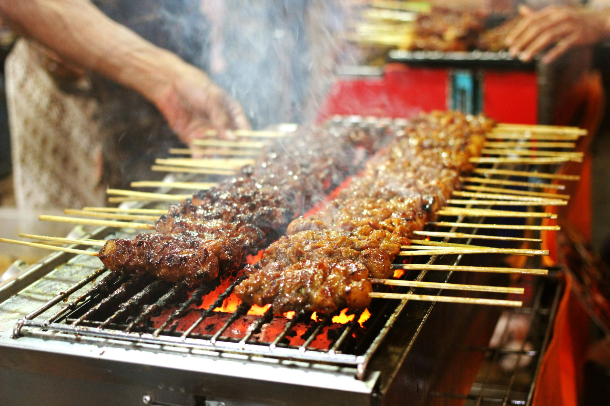
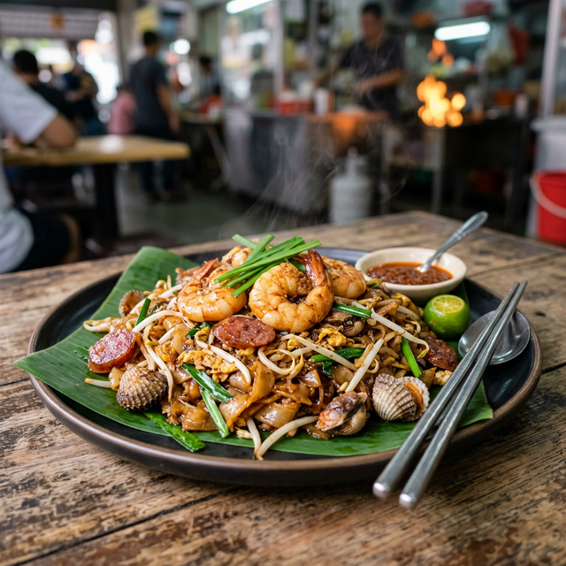
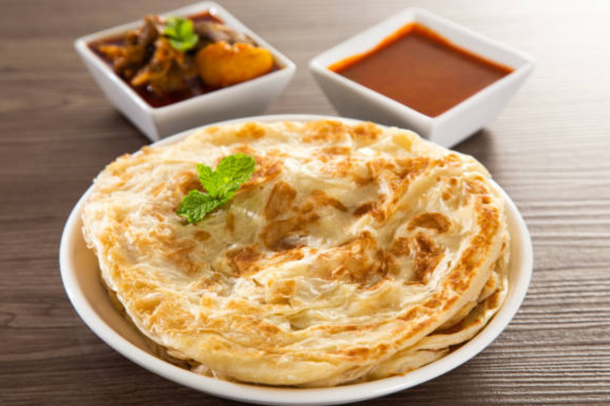
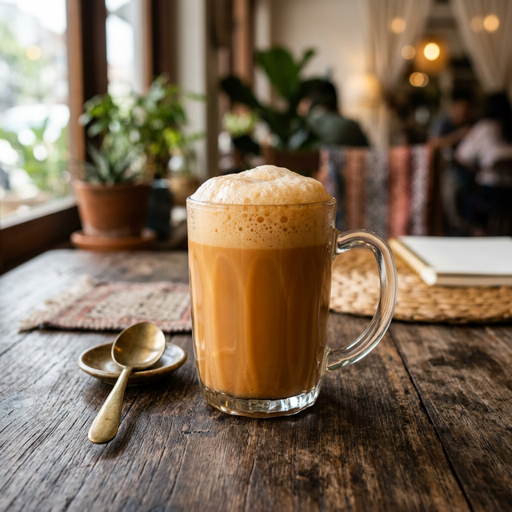
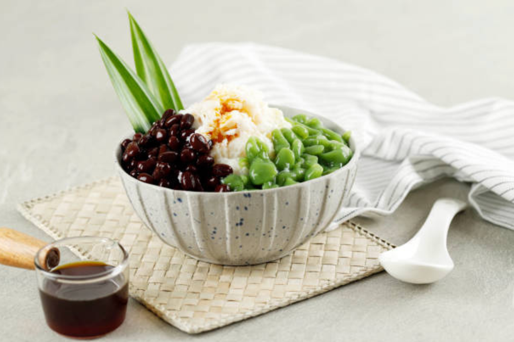

Nasi Lemak
Nasi Lemak is considered the national dish of Malaysia. It consists of rice cooked in coconut
milk and pandan leaves, giving it a rich and fragrant taste.
It is traditionally served with spicy sambal, crispy fried anchovies, roasted peanuts, boiled
egg, and cucumber slices. It is a popular breakfast choice but can be enjoyed at any time of the
day.

Satay
Satay is a beloved Malaysian street food made of marinated meat (usually chicken, beef, or
mutton) skewered on bamboo sticks and grilled over a charcoal fire.
What makes satay special is its rich and sweet peanut sauce served alongside it. It is often
accompanied by fresh cucumber and onion pieces.

Char Kway Teow
Char Kway Teow is a famous noodle dish, especially popular in Penang. It features flat rice
noodles stir-fried over high heat with soy sauce, chili, prawns, cockles, bean sprouts, and egg.
The high heat cooking style gives the dish a signature smoky flavor known as "wok hei," making
it a must-try for food lovers.

Roti Canai
Roti Canai is a popular Malaysian flatbread with Indian origins. The dough is repeatedly
kneaded, flattened, and folded before being cooked on a flat grill.
This creates a crispy outside and soft, flaky inside. It is typically served with dhal (lentil
curry) or other types of rich, flavorful curries.

Teh Tarik
Teh Tarik, meaning "pulled tea," is the national drink of Malaysia. It is made from strong black
tea blended with condensed milk.
The "pulling" process involves pouring the tea back and forth between two containers from a
height. This cools the tea and gives it a distinct frothy top.

Cendol
Cendol is a refreshing traditional dessert perfect for Malaysia's tropical climate.
It consists of shaved ice topped with bright green rice flour jelly droplets (cendol), coconut
milk, and sweet palm sugar syrup (gula melaka). Sometimes red beans are added for extra flavor.